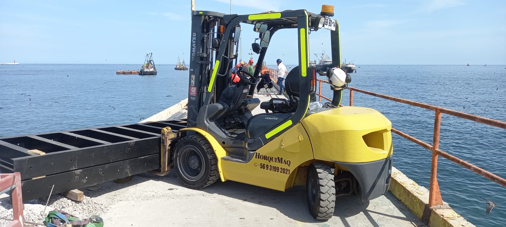
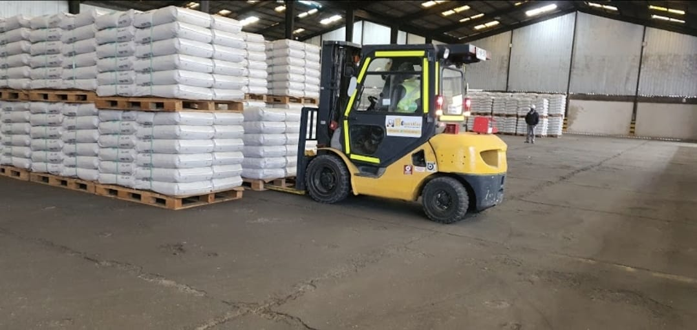
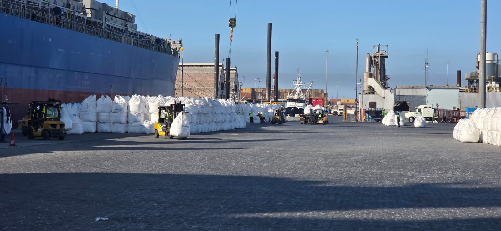
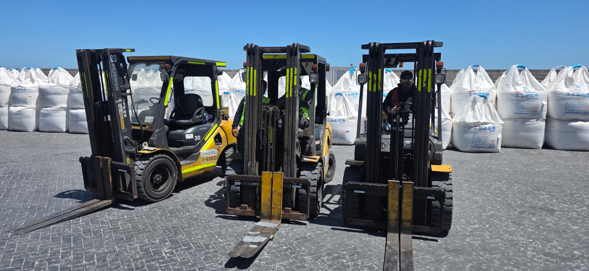

Galería



En HorquiMaq entregamos apoyo operacional para faenas portuarias, pesqueras, industriales y logísticas, facilitando el movimiento de carga, materiales y equipos según las necesidades de cada operación.
Apoyo práctico en operaciones portuarias, pesqueras e industriales, colaborando en procesos de carga, descarga y traslado de materiales.

Manipulación y traslado de carga, pallets, materiales y mercancías, adaptándonos al tipo de faena y condiciones del lugar de trabajo.

Servicio orientado a empresas que requieren continuidad operacional, coordinación en terreno y apoyo eficiente en procesos logísticos.


Contáctanos y coordinamos el servicio más adecuado para tu faena.
Solicitar información